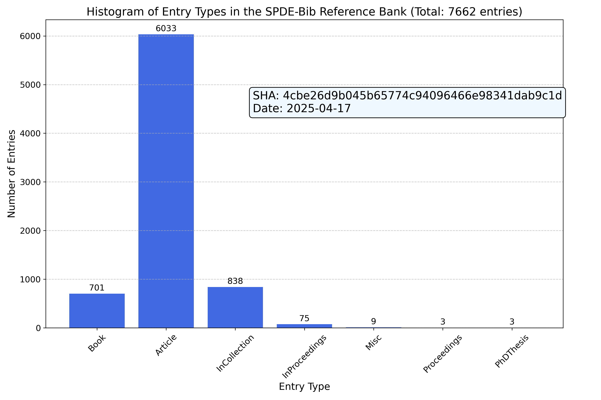

Introduction¶
Motivation¶
When writing a paper, it is not an easy task to keep the bibliography part correct and updated. This process is also very time-consuming. Through this repo, we provide a uniform access to the latest bibliography entries related to the research area of the author: Stochastic Partial Differential Equations (SPDEs) and related fields.
Sources¶
Here is a reference bank. The biblatex entries were mostly obtained from
MathSciNet : https://mathscinet.ams.org/
for the published mathematics papers and from the arXiv for the preprint. Some physics papers are obtained from
APS Journals : https://journals.aps.org/
For papers that do not originate from the aforementioned sources, we endeavor to retrieve the bibliography entry directly from the official journal website to ensure maximum accuracy of the records. We also include many preprint from the arXiv.
Status and Statistics¶
The current statistics of the bibliography bank is shown in the following figure:
{kind=link}
Naming convention¶
The naming convention consists of three makeup cases:
Single authored paper, such as:
Einstein, Albert. Random PDE for special relativities. Annals of Probability, Volume, Number, 2023.
The cite key is
einstein:23:random. The first parteinsteinis the last name of the first author. The second part23is the last two digits of the publication year. The third partrandomis the first word of the title. To cite this reference, use\cite{einstein:23:random}
Paper with two authors, such as:
Einstein, Albert and Grothendieck, Alexandre. A stochastic PDE model for general relativities. Electronic Journal of Probability, Volume, Number, 2024.
The cite key is
einstein.grothendieck:24:stochastic. The first parteinstein.grothendieckis the last names of the first two authors. The second part24is the last two digits of the publication year. The third partstochasticis the first word of the title.\cite{einstein.grothendieck:24:stochastic}
Paper with more than two authors, such as:
Einstein, Albert and Grothendieck, Alexandre and Newton, Isaac. A private communication on interemittency. Transactions of AMS, Volume, Number, 2025.
The cite key is
einstein.grothendieck.ea:25:private. The first parteinstein.grothendieck.eais the last names of the first three authors andeastands foret al.. The second part25is the last two digits of the publication year. The third partprivateis the first word of the title. To cite this reference, use the following code:\cite{einstein.grothendieck.ea:25:private}
Here is a demonstration how to use it in neovim: Asciinema Demo.
Download¶
Download all the biblatex entries from the following link:
All.bib : https://raw.githubusercontent.com/chenle02/SPDEs-Bib/main/All.bib
How to contribute¶
We strive for accuracy and comprehensiveness in this bibliography bank. If you encounter any errors, typos, or issues, or if you would like to suggest additional entries, we warmly welcome your input. Your contributions are invaluable to the enhancement of this resource. Please feel free to open an issue in the repository or reach out directly via email (chenle02@gmail.com <mailto:chenle02@gmail.com>) for any such matters. We aim to address all feedback promptly.
Cite this work?¶
We hope that the resources compiled in this bibliography bank have been supportive in your research endeavors. We are sincerely grateful for any form of acknowledgment you might extend. Should you wish to mention this work, a statement such as the one below could be included in your acknowledgments section or as a footnote:
The author(s) would like to recognize the contribution of the GitHub repository chenle02/SPDEs-Bib curated by Le Chen, which has supported this research.
Or, if you prefer to directly cite this repository, please feel free to use the following BibTeX entry:
@misc{chen:23:spdes-bib,
author = {Le Chen},
title = {{SPDEs-Bib}: A Comprehensive Bibliography of Stochastic Partial Differential Equations and Related Topics},
month = {nov},
year = {2023},
publisher = {GitHub, Zenodo, \& Read the Docs},
journal = {GitHub repository},
doi = {10.5281/zenodo.10143431},
url = {https://spdes-bib.readthedocs.io}
}